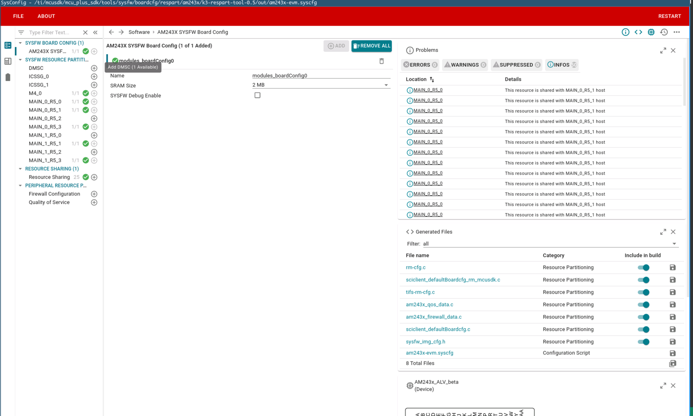
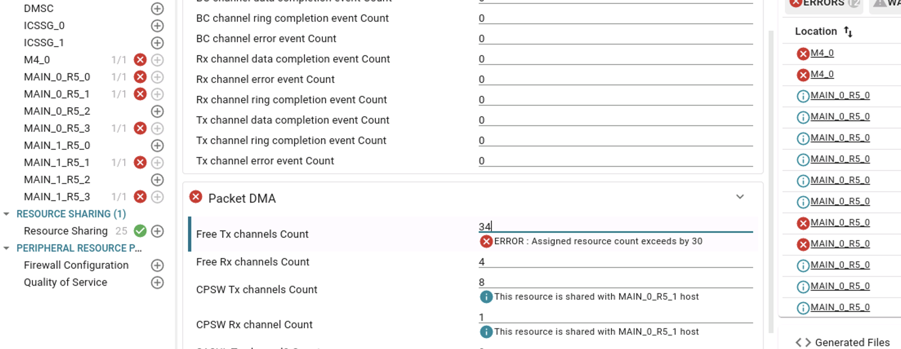
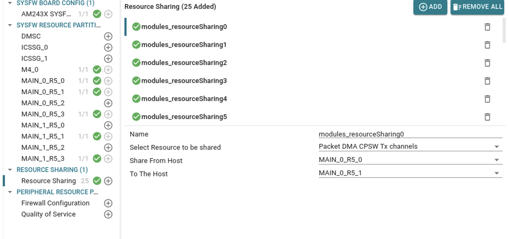
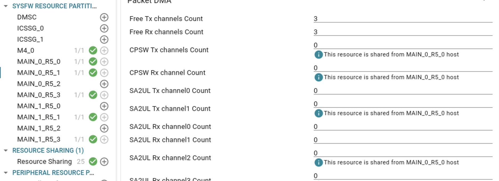

Introduction
Various resources of the SOC like the number of DMA channels, number of interrupt router outputs, number of interrupt aggregator virtual interrupt numbers etc. are usually managed by a resource management system or a resource manager. In the case of AM64X device, this is managed by the System Controller Firmware (SYSFW) running on the M3 core. Once the SYSFW is loaded on M3 and is initialized, we need to send a certain configuration data to the SYSFW regarding the resources we would be using. This is largely an array of resource assignment entries, with each entry specifying the start number of the resource, count or number of resource needed, type of resource, host id of the core which will request for this resource, etc. Later when the request for a specific resource is made, the SYSFW will cross check the request parameters with this already sent configuration data, and the requested resources will only be allocated if that falls within the range in this configuration data. We call this the Resource Management Board Configuration or RM boardcfg.
Changing a particular resource
- RM Boardcfg is stored in a C file
{SDK_ROOT_DIRECTORY}\source\drivers\sciclient\sciclient_default_boardcfg\am64x\sciclient_defaultBoardcfg_rm.c. Ultimately this file needs to be changed and rebuilt for the boardcfg change to take effect.
- This file is autogenerated using a SysConfig based GUI tool (K3 Respart Tool). This tool can be invoked from the commandline. To invoke the tool, run the following from the SDK root directory:
make -s -C tools/sysfw/boardcfg configure SOC=am64x
It should open up the resource management configuration sysconfig window like so:

Resource Partitioning Tool
- Any changes required for any of the resources can be changed using the GUI and doing a File->Save (Ctrl-S) saves it to a *.syscfg file inside the tool.
- Once you have identified for which host you need to assign resources to, and the resource type which you want to modify, click on that particular host to see the currently assigned resources.
- A host is defined as a logically distinct high level software entity along with a particular security status. This is mostly a particular piece of software running on a physical core.
- In the RTOS world this does not have a lot of significance, where mostly it is going to be one piece of software which is going to run in a core - be it a bare-metal application or an RTOS based one. In linux/HLOS, it is possible that a core has multiple SW entities running, mostly as VMs.
- In a case where a security firmware and the Linux OS is running in the same core, both these SW entities would be considered as different hosts, because of the difference in security status.
- Each of these 'hosts' are given an ID by the SYSFW:
- Here is the host id to core mapping:
| HOST ID | Core |
| TISCI_HOST_ID_DMSC (0U) | DMSC ARM Cortex M3 |
| TISCI_HOST_ID_MAIN_0_R5_0 (35U) | Cortex R5FSS0_0 (Secure Context) |
| TISCI_HOST_ID_MAIN_0_R5_1 (36U) | Cortex R5FSS0_0 (Non-Secure Context) |
| TISCI_HOST_ID_MAIN_0_R5_2 (37U) | Cortex R5FSS0_1 (Secure Context) |
| TISCI_HOST_ID_MAIN_0_R5_3 (38U) | Cortex R5FSS0_1 (Non-Secure Context) |
| TISCI_HOST_ID_MAIN_1_R5_0 (40U) | Cortex R5FSS1_0 (Secure Context) |
| TISCI_HOST_ID_MAIN_1_R5_1 (41U) | Cortex R5FSS1_0 (Non-Secure Context) |
| TISCI_HOST_ID_MAIN_1_R5_2 (42U) | Cortex R5FSS1_1 (Secure Context) |
| TISCI_HOST_ID_MAIN_1_R5_3 (43U) | Cortex R5FSS1_1 (Non-Secure Context)
|
| TISCI_HOST_ID_A53_0 (10U) | Cortex A53SS0_0 (Secure Context) |
| TISCI_HOST_ID_A53_1 (11U) | Cortex A53SS0_0 (Secure Context) |
| TISCI_HOST_ID_A53_2 (12U) | Cortex A53SS0_1 (Non-Secure Context) |
| TISCI_HOST_ID_A53_3 (13U) | Cortex A53SS0_1 (Non-Secure Context) |
| TISCI_HOST_ID_A53_4 (14U) | Cortex A53SS0_1 (Non-Secure Context)
|
| TISCI_HOST_ID_M4_0 (30U) | Cortex M4 (Non-Secure Context) |
| TISCI_HOST_ID_ICSSG_0 (50U) | ICSSG_0 (Non-Secure Context) |
| TISCI_HOST_ID_ICSSG_1 (51U) | ICSSG_0 (Non-Secure Context) |
- For all general purpose use-cases in RTOS, you would want to allocate resources to the non-secure host. Secure hosts in RTOS are reserved special softwares like the secondary bootloader which would need elevated security privileges to perform actions like opening firewalls, booting other cores etc.
- You can decrease/increase the number of resources.There are hard restrictions to certain resources. As long as your assignments are within the restrictions, you can change the configuration in the way which suits your application. The tool will throw an error if any of resources exceed their allowed number.

Resource Exceeding Allowed Limits
- Resources can be shared between hosts, but at most 2 hosts can have the same resource. To share a resource, a resource sharing entry needs to be added in the GUI tool.

Resource Allocation Entry
- After the resource is shared, it will show up as an info under the resource.

Resource Allocation Info
- To generate the actual C file from this config file, run the following from the SDK root directory once you have saved the config in GUI:
make -s -C tools/sysfw/boardcfg configure-gen SOC=am64x
- That should update the
{SDK_ROOT_DIRECTORY}\source\drivers\sciclient\sciclient_default_boardcfg\{SOC}\sciclient_defaultBoardcfg_rm.c file.
Rebuilding the board configuration
- Once the changes are made in the file, there are three steps to be followed:
- Re-build the
sciclient_ccs_init example
- Re-build the boardcfg binary blob by running the following from SDK root directory:
make -s -C tools/sysfw/boardcfg sciclient_boardcfg SOC=am64x
- This makes sure that boardcfg is updated for both SBL and CCS based boot flows.
 1.8.20
1.8.20